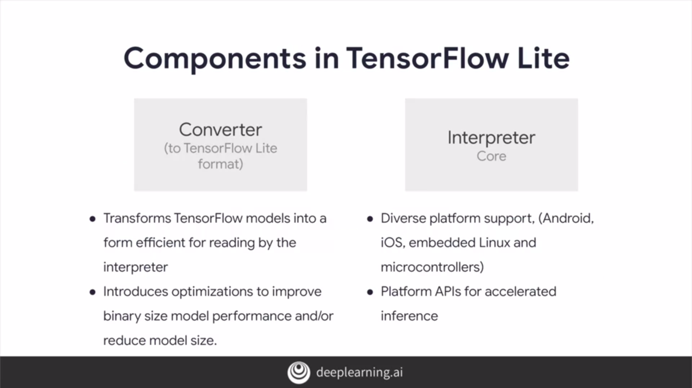
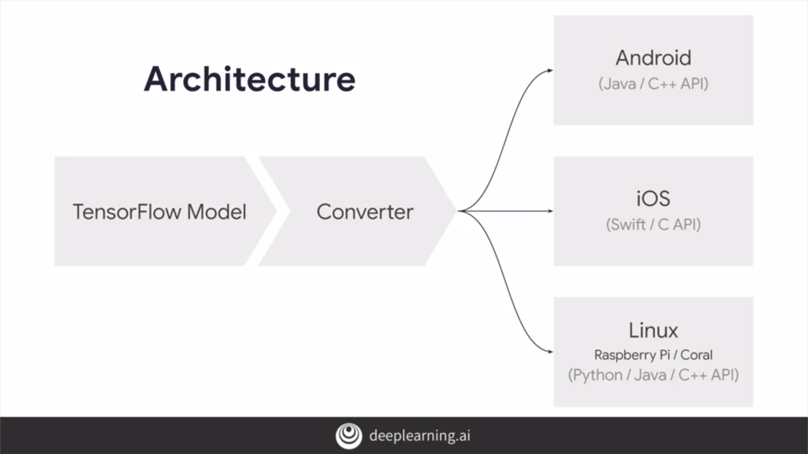
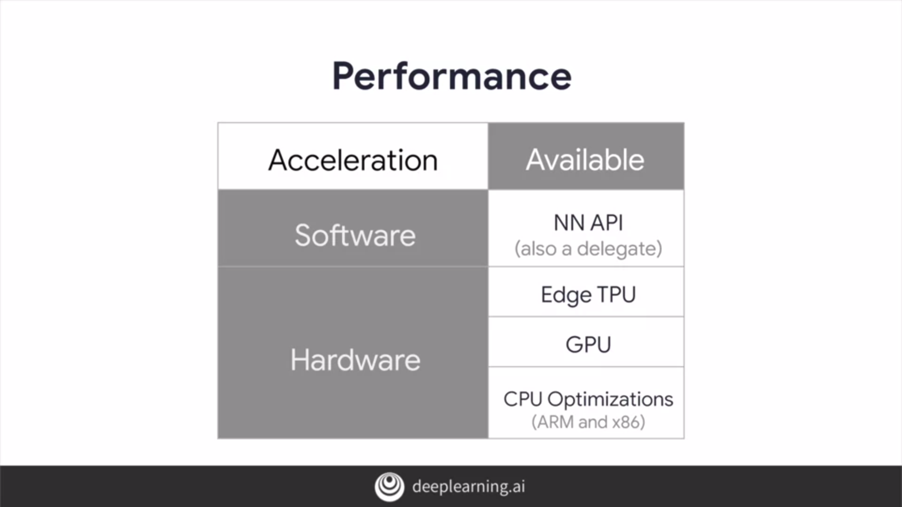
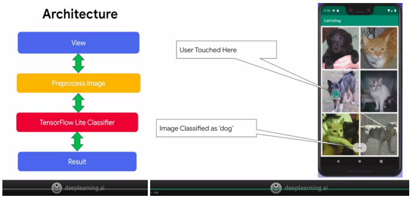
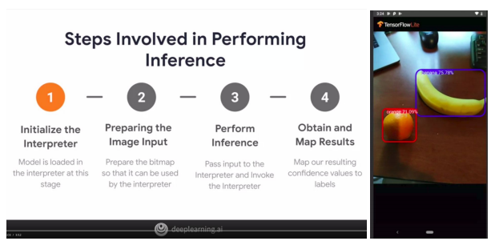
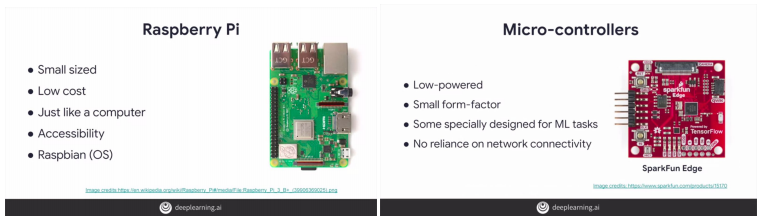

Device Based Models With Tensorflow Lite
We've seen a lot of deep building algorithms run maybe on our system and on the Cloud, but there's something magical to getting these algorithms. Maybe a model that we've trained to run in your hand, on our smartphone or on a lightweight embedded processor like, an Arduino Raspberry Pi. TensorFlow Lite, an exciting technology that allows us to put our models directly and literally into people's hands.
Overview
- Features
- Components in TFLite
- Architecture, Performance and Optimization
- Example
- Running TF Model in Android App
- Building the TensorFlow model on IOS
- Tensorflow Lite on devices
Features
- Lightweight - We may have heard of mobile models like mobilenets and how they're designed for the mobile platform. Their goal is to be lightweight working on small low power devices like phones, and they may not be as accurate as those which run on supercomputers in the Cloud.
- Low-Latency - TensorFlow Lite is a solution designed to run on devices with low latency and without the need for an Internet connection. With this, we could avoid following one regime where it would involve taking a round trip to a model server.
- Privacy - Since TFLite uses on-device ML to operate, there's absolutely no need for data to leave the device in sharing user’s privacy.
- Improved power consumption - It can also help improve power consumption as we might already be aware that network connections can tend to be very power-hungry.
- Efficient model format - Models in TFLite are designed to have a small binary size with just a minor impact on accuracy.
- Pre-trained models - When it comes to availability of pre-trained models, TensorFlow Lite has just about everything we need for the most common machine learning tasks, as well as sample examples that you could try out just to see how a model would run on a mobile device. Also, TensorFlow Lite comes with a utility that helps us convert TensorFlow models from their various formats into a special format that's consumable by TensorFlow Lite.
Components in TFLite
TensorFlow Lite comprises two main components; a converter, and an interpreter.

Converter
The converter can be used for creating a TFLite model from various model formats and it runs on our model development and training environment. It allows us to optimize our models for optimal performance and even bring down the size of our model.
Interpreter
The interpreter, which runs on our mobile device deals with the inference of these converted models. The interpreters core is responsible for executing these models and client applications using a reduced set of TensorFlow's operators. It uses a custom memory allocator, which is less dynamic to ensure minimal load, initialization, and execution latency. It also provides support for a wide range of devices both in mobile and IoT along with their hardware accelerated APIs.
Architecture, Performance and Optimization
Architecture
Once we trained a model and saved it like the recommended saved model format using tensorflow, we'll use the tensorflow light converter tools to flatten the model to prepare it for mobile or embedded devices.

Performance
Running inference on compute heavy machine learning models on mobile devices is resource demanding due to a device having limited processing and power. So inference on these devices has to be performed very quickly to avoid overhead and make real-time applications possible. For this purpose tents flow lights can employ Software/Hardware acceleration libraries or apis for supported devices.

List of ways to improve inference,
- Inference on Android devices is by leveraging Androids Neural Network API(NN API).
- Another form of acceleration which comes in tensorflow light is a TensorFlow Light delegate which is a way to pass our graph execution to Hardware (GPU, TPU) that specializes to run inference.
- It can be boosted with HTTP use as they are solely built for operating on deep learning models. This is not just limited to serving models, but also to training them. They're also known to be high performing and have a low-power footprint while being pretty small in size.
More about delegates
Optimization
This is necessary because of the generally limited resources on mobile and embedded devices. It's critical that deployed machine learning models have optimal model size, low latency, and power consumption. This is even more important on edge devices where resources are further constrained and model devices and efficiency of computation can become a major concern.
There are several methods that one can use to achieve these types of optimizations,
- Quantization - Which reduces the Precision of the numbers in the weights and biases of the model.
- Weight Pruning - Which reduces the overall number of parameters.
- Model topology transforms - Whose goal is to convert the overall model topology to get a more efficient model to begin with.
In following examples, mostly focus on quantization because that can give us the biggest and easiest immediate gains.
Example
Note :: In below example, we have used the standalone TF Lite Interpreter (instead of on smaller devices), which runs in Python, and we'll use this to see how inference would work on smaller devices.
import pathlib
import numpy as np
import matplotlib.pyplot as plt
import tensorflow as tf
# Create a simple Keras model.
x = [-1, 0, 1, 2, 3, 4]
y = [-3, -1, 1, 3, 5, 7]
model = tf.keras.models.Sequential([
tf.keras.layers.Dense(units=1, input_shape=[1])
])
model.compile(optimizer='sgd',
loss='mean_squared_error')
model.fit(x, y, epochs=200)
export_dir = 'saved_model/1'
tf.saved_model.save(model, export_dir)
# Convert the model.
converter = tf.lite.TFLiteConverter.from_saved_model(export_dir)
tflite_model = converter.convert()
tflite_model_file = pathlib.Path('model.tflite')
tflite_model_file.write_bytes(tflite_model)
# Load TFLite model and allocate tensors.
interpreter = tf.lite.Interpreter(model_content=tflite_model)
interpreter.allocate_tensors()
# Get input and output tensors.
input_details = interpreter.get_input_details()
output_details = interpreter.get_output_details()
# Test the TensorFlow Lite model on random input data.
input_shape = input_details[0]['shape']
inputs, outputs = [], []
for _ in range(100):
input_data = np.array(np.random.random_sample(input_shape), dtype=np.float32)
interpreter.set_tensor(input_details[0]['index'], input_data)
interpreter.invoke()
tflite_results = interpreter.get_tensor(output_details[0]['index'])
# Test the TensorFlow model on random input data.
tf_results = model(tf.constant(input_data))
output_data = np.array(tf_results)
inputs.append(input_data[0][0])
outputs.append(output_data[0][0])
# Visualize the model.
%matplotlib inline
plt.plot(inputs, outputs, 'r')
plt.show()
Running TF Model in Android App
Android is a versatile operating system that is used in a number of different device types, but most commonly phones, tablets and TV systems. Using TensorFlow Lite we can run our models on Android.
Android studio development tools here.
Android app that performs image classification
Build a basic Android app that has six built-in images of cats and dogs. We'll take the cats versus dogs
pre-trained classifier model (converted as TfLite model). Architecturally we'll follow the process of getting
an image from a view, preprocessing it, and then feeding it to the TensorFlow Lite interpreter to classify it.
This will produce results that we can render out to the user.
Cat_vs_dog sample mobile app is available here.

Android app that performs object detection
Next object detection in the video frame, where multiple objects may be recognized and bounding boxes drawn around them. The model used is trained on the COCO dataset and it can recognize up to 10 objects 27 in 80 classes. We can see our four-step process below. Many of the steps are similar to the last example, but mapping and rendering the results will be very different.
Object_detection sample mobile app is available here.

Building the TensorFlow model on IOS
The other popular mobile operating system is, of course, iOS. We'll need some programming background with Swift for iOS. We'll go through two apps here similar to what we did for Android. In order to use TensorFlow Lite with Swift, there's a TensorFlow Lite Swift pod which gives us the interpreter and the various libraries.
We can get details on the Swift interpreter for TensorFlow Lite at this URL. To add TensorFlow Lite to our iOS project, we use a pod file. The technology is called CocoaPods. It gives us an easy way to add dependencies to our projects.
IOS app that performs image classification
Cat_vs_dog sample app is available here.
IOS app that performs object detection
Object_detection sample app is available here.
Tensorflow Lite on devices
We've looked at TensorFlow Lite and explored building apps on Android and iOS that use it. Now we are
going to explore embedded systems like Raspberry Pi, and learn how to get our models running on that.
The nice thing is that the Pi is a full Linux system, so it can run Python, allowing us to either use the full
TensorFlow for Training and Inference, or just the Interpreter for Inference. Recommend the later, as
training on a Pi can be slow.
Sample applications are available here.
